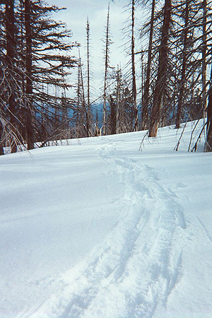
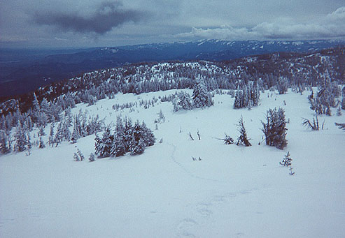
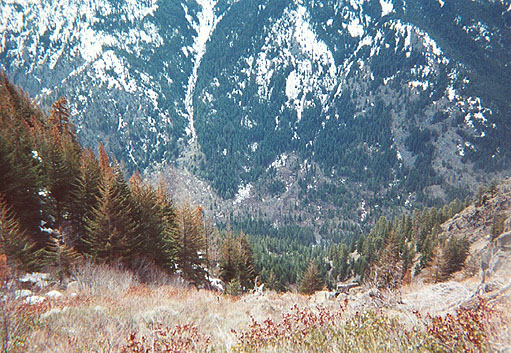
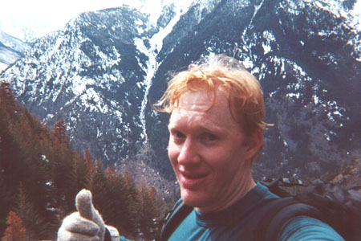
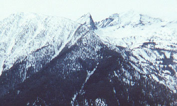

Icicle Ridge
April 9, 2001
- Elevation gain: 6000+ feet
- Miles: approx. 11 or 12
- Total time: 6:00 am to 3:15 pm
Friday night found me trying to choose a hiking/snowshoe adventure for the next morning. I wanted to avoid the wet, snowy west side of the mountains, so I looked in the hiking guidebook for the Leavenworth area. I didn’t fancy walking 4 miles of still-closed Bridge Creek road to access the Colchuck Lake area. I also thought (mistakenly) that the Icicle Canyon road was closed at Bridge Creek. So two choices came to mind: Snow Lake trail, or Icicle Ridge. I had been on the Snow Lakes trail all the way to the Enchantments before, but I’d never tried the Icicle Ridge trail. I decided to try following it all the way from the trail-head at 1200 feet to a high point at 6905 feet. Then, I would descent the Fourth of July trail to the Icicle Canyon road, and walk, then hitchhike back to my car. I was pretty excited about this plan and the thrill of the unknown it presented.
The next morning I left the house by 4:00 am, driving through rain and hail to Steven’s Pass. From here, the moisture decreased, and soon I was looking at a beautiful moon to the south. I arrived at the trail-head at 6 am, strapped the snowshoes to my pack and started walking. It was great to be on dry, pine-needled forest floor. Almost immediately, I startled a pack of cotton-tailed deer, who allowed me to “herd” them up the ridge for 2000 feet. Every time I came around a corner, they would get moving again. Views of the village expanded, and I hurried along, excited to get up high. After exactly one hour, I had climbed 2000 feet, surprising myself. I tried to slow down, knowing it would be a long day, and I was wearing myself out with such haste.
Soon I encountered snow on the trail, then came to a spectacular viewpoint of Tumwater Canyon. Apparently, this is the deepest canyon in the state, or maybe that is the Icicle Canyon on my left. It was great to see cars on highway 2 far below. I pressed on, and soon the terrain was completely snow-covered, with a light layer of fresh snow from the previous night. I stopped for a drink and put on snowshoes, following ski tracks for a while. Eventually, they disappeared, and I just wandered up the ridge on my own. I came to a very pretty open area with sparse burned trees. The angle eased off and I continued in a quiet, dreamy mood, always wondering what I’d find over the next rise.
I had set my altimeter 200 feet too high without realizing it, so I came to a confusing point where the map suggested I should head off the crest on the right. Looking at this, the terrain was too cliffy so I climbed back onto the ridge and soon arrived at the proper area to leave the ridge. Still, I was uncertain, since the way would require descending into a forest and climbing back to a ridge on the other side. I ate some lunch and looked down on Leavenworth. Eventually, I set a compass bearing and headed into the thicker forest. Still, travel wasn’t difficult, and I had snowshoe hare tracks to keep me company. As I climbed out the other side of this valley (the Power Creek drainage), I found I ended up right where I expected. I eagerly went forward into a strong wind to catch a glimpse of my high point. It was across another small valley, with another 200 foot descent and a 600 foot climb. This was getting tiring! Down into trees and out and up the other side on steeper slopes. Now I could look down on the trail into Colchuck Lake and across to Colchuck Peak, whose top was just visible under clouds. I plodded along in a strong wind to the 6905 ft. hump that was my high point. Here, I called Kris, getting great reception. I told her I was going to attempt a descent of the 4th of July trail, and if that didn’t work, I’d return the way I came.





It was 11:45 am, and I went down to a saddle, then down the mountain, traversing somewhat west. I hoped this approximated the trail. I knew there were cliffs below, and as the angle of snow steepened, I took off my snowshoes, feeling better digging my boot heels in. In an irritating development, I immediately came to a section of rotten, deep snow that I fell in up to my hips on every step! I put the snowshoes back on, then ended up in forest, brambles, and steeper hard snow. I took them off again. Now I was getting a glimpse of how things would be. Sections of forest were dense, and tangled with fallen logs and brush. Sections of snow were rotten or hard. I still had over 3000 feet to descend, so I made a great effort to find the trail, knowing that when the snow ran out, I’d be in permanent brush.
I actually found a section of tread, a miracle. I followed it on a switchback for 20 feet, then it was gone. Gamely, I went straight down, ending up in a bramble patch. Now I seriously considered climbing back up. Boy, was it a long way up there! I’d already climbed over 6000 feet, and was pretty tired. I knew looking for the trail was fruitless. So it was either go back up, or find a new way down. I worried about the 1000 foot cliffs shown on the map, and the stream gully below.
I climbed back to where I had seen the trail, gave another look for it, and made up my mind to grin and bear it all the way down. I looked for open areas with snow, but not too much. I got lucky right away with a big grassy slope, almost snow-free, but rocky enough to protect against slippery falls. Yes! 1000 feet down, 3000 to go. After this, a thick brush field, with slide alder trees above my head. I learned to wade in, grabbing limbs behind me for balance.
Then I heard running water and found it in trees. At least I’d have water if I were out all night. I was planning for this eventuality, just in case. Travel was extremely difficult in this creek bed, and while resting, I looked up and right to see the cliffs I had feared. They continued down as far as I could see too. “Okay,” I thought.
I edged to the left of the stream, soon realizing that to get clear of the drainage would be a lot of work, as the walls deepened and steepened. I looked back at the cliffs, and saw a talus field below them. Gambling that this field, or game trails between the cliffs and the stream would get me to the valley floor, I headed that way. Talus block hopping was much more fun, and though the “CRACK!!” of ice falling from the cliffs startled me sometimes, I made good progress.
I still had brush to deal with however, and while going through a swath I somehow ended up falling onto a stick that poked me between my upper lip and upper teeth. “OWWW!” I tasted blood, but not much. Sections of brush, trees and talus field took me to a vantage point where I could see about 1500 feet of the same kind of terrain. Although I couldn’t see the river, I felt I was going to be down soon. “Yes!” I finished my sandwich, drank some Gatorade, and bent to the task.
“Aaaarrgggh!” My right nipple exploded in pain as a whippet-thin branch slapped me hard!
“Ahhhhhaah!” A rude slap to the face left my head numb, tingling and angry!
Okay, so it wasn’t very easy from there. I continually got into positions where every limb and my pack were trapped by some binding force. Sometimes crawling, or facing into a steep tangle of brambles, I descended foot by foot. The occasional traverse right or left took eons, and I soon learned to avoid doing this. The brush is much kinder about letting you descend than traverse! I had left snow behind long ago, and the increasing green hell around the creek caused me to look frantically for rock, even steep rock. I edged rightward, getting a few hundred feet of easy down-climbing on blessed rock and dirt. Always seeking steep terrain, I eventually found fresh bear tracks in old snow near the creek. I wonder what he thought of my grunting, cursing and occasional screaming! I pressed on - he may have expected me to be injured prey.
Finally I found and held rock and dirt slopes the rest of the way. Reaching the road was anticlimactic. Just when I had learned to accept the nature of this elemental travel, it was over. Okay. Wow, I’m down!
It wasn’t even that late, 3:15 pm! I took off my shoes and socks, replaced them and put the gaiters away. I started walking the road and whistling. Within 5 minutes, a car arrived and I sheepishly stuck out my thumb. I gave a sort of “I’m sorry” grin that I hoped would conjure good feelings rather than horror. The car drove on, then stopped! It was three nice ladies from Bellingham who had tried hiking the 4th of July trail! We talked about hiking around Leavenworth, and they dropped me off at the trail-head. I was in the car, thinking about the great hike I’d had when a black shape tickled it’s way across my arm. “AAARRHGH!” I screamed as I wrestled the car to the side of the road. I got out, nearly running into traffic in haste to get away from the foul creature. As the flow of cars subsided, I checked myself more thoroughly. One tick was on my long underwear, inches from my crotch. Another wasn’t discovered until I was back on the road. It was crawling in my hair. In hindsight, I should have expected this sort of thing, thrashing around in the brush as I was. But ticks were one of those “It can’t happen to me” things. My friend Steve had found some crawling on him last year, but I chalked this up to his hygiene, or perhaps a personality disorder. From now on, I’ll establish a clean-room environment on some granite slabs before getting into a car. If I left a tick with the people who gave me a ride, let me apologize profusely.
I’ve already received my 50 lashes.